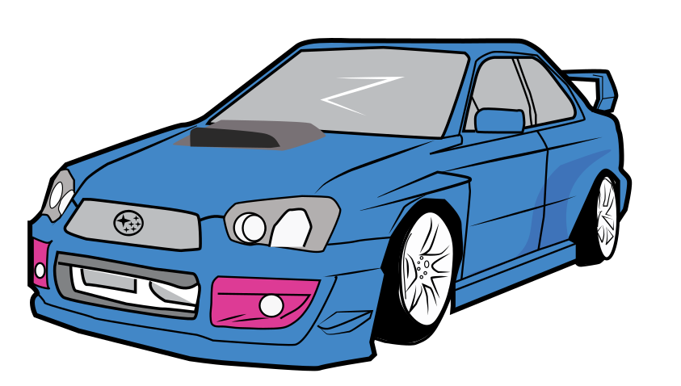

SUBARU WRX
-

-
1992 - 2000
Introduction
-
2000 - 2007

Introduction
-
2007 - 2011
Introduction
-
2011 - 2014
Introduction
-
2015 - Now
highlights
- Home
- 1992 - 2000
- 2000 - 2007
- 2007 - 2011
- 2011 - 2014
- 2015 - Now
- The Future